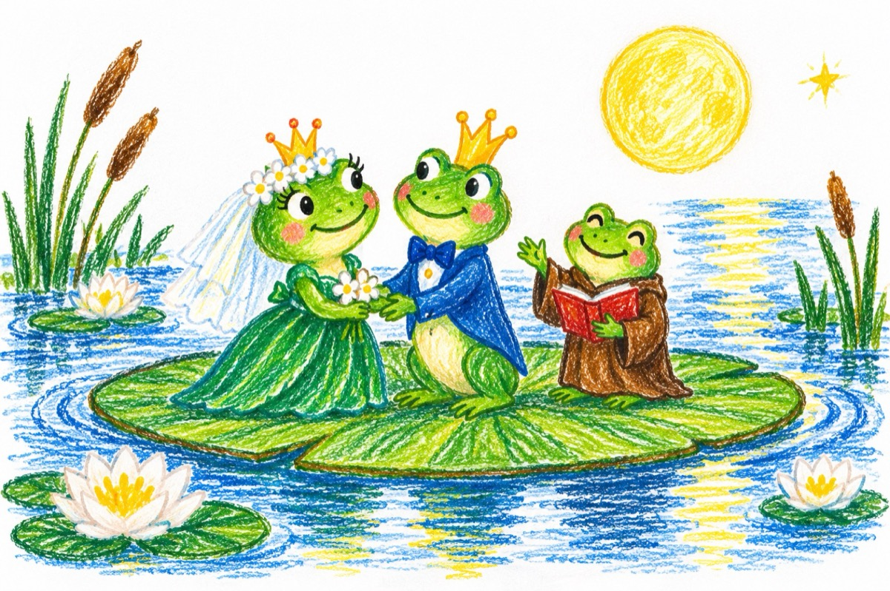

Nunta
De la lacul din RĂZORI
Au sosit doi pețitori
Cu joben, frac și baston,
Ocăind pe-același ton,
Cu plocoane și-o scrisoare -
Că prințul vrea să se-nsoare!
Și-au venit cum obiceiul,
La Măria sa broscoiul
Ca să cadă la-nvoială,
Pentru-această rânduială -
Că-i bine când te măriți
Să știe și-ai tăi părinți!
Iat-o deci și pe prințesă,
Îmbrăcată-n straie-alese
Din mătasea broaștelor
Și luciul smaraldelor...
Însoțită cum se știe
De un grup de balerine
Și pe fondul muzical
Cu oac, oac, original
Și-au înfățișat prezența -
Prințului,
Ce-a venit cu diligența,
Trasă de vreo șase cai ,
Însoțit și de-un alai
Cu vreo trei, patru broscuțe,
Mlădioase și drăguțe
Și-au purces cum înțelesul -
Sărbătoarea și ospățul...
Luna proaspătă și plină
Le-a dat din belșug lumină
Iar Luceafărul în lac
Tras pe-o frunză, de-un brotac
Pe miri la el i-a chemat
Și pe loc i-a cununat
Dându-le în mare gală -
Coronița CEA REGALĂ!
Toată lumea de pe lac
De la țânțar, libelulă
Pân’ la cel mai mic brotac,
Au cântat și au dansat,
Iară nunta, nici acum nu s-a gătat!
Vasile Groza